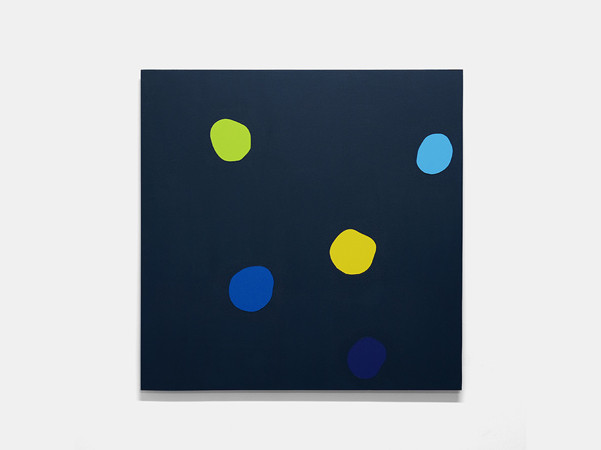

Paintings
2010 2012 2015 2019 2021 MORE INFONOTCHED

Reflections 2,
2012
Acrylic on canvas
60"x96"

Acrylic on canvas
60"x96"
Get Lost,
2019
Acrylic on panel
24"x424"
Acrylic on panel
24"x424"

Uvula,
2019
Acrylic on canvas
24"x20"
Acrylic on canvas
24"x20"

Dai-Fuji Sushi,
2015
Acrylic on canvas
30"x34"
Acrylic on canvas
30"x34"